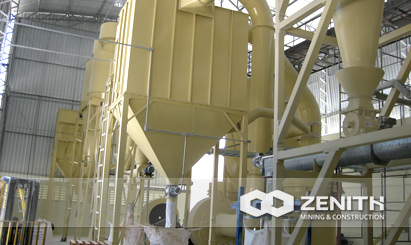
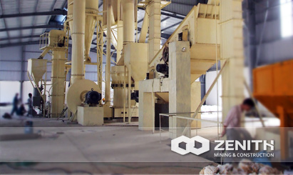

- 
- 
MTM130X Series Strengthened Ultrafine Mill
Based on many years research, our mill experts designed MTM130X Series strengthened Ultra fine mill on the basis of our original patented product - MTM Series trapezium mill. This grinding mill make full use of professional manufacturer's advantages and increase the stability of machines. The reducer and motor use triangle-belt delivery power, which is good for overload protection.
Application of MTM130X Series Strengthened Ultrafine Mill
The MTM130X machine can be used for grinding various kinds of nonflammable and non-explosive minerals of which Moh's hardness is less than 9.3 and moisture content is lower than 6%. The typical materials are quartz, feldspar, calcite, talc, barite, fluorite, rare earth, marble, ceramics, bauxite, manganese ore, iron ore, copper, rock phosphate, iron oxide red, zircon sand, slag, water residue, cement clinker, activated carbon, dolomite, granite, garnet, iron oxide yellow, chemical fertilizer, compound fertilizer, fly ash, bituminous coal, coke, lignite, magnesium sand, chromium oxide green, gold ore, red mud, clay, kaolin, porcelain clay, streaming proluta, muddy green rock, pyrophyllite, shale, sand stone, rock, basalt, gypsum, graphite, silicon carbide, thermal insulation materials, etc.
MTM130X Series Strengthened Ultrafine Mill Benefits and advantages
- Adoption of nodular cast iron
The base is made of nodular cast iron. This high strength, anti-vibration material has the damping property of cast iron, intensity of cast steel and good dent resistance.
- Complete soft connection.
There is soft connection between machine body and base , non-rigid contact ,which avoids the passing of vibration from the grinding chamber to the machine body and classifier, to improve the accuracy of separating.
- Adoption of elastic sleeve pin coupling .
The main unit and reducer is used of elastic sleeve pin coupling, which avoids the easily broken of Nylon Pin, improves its reliability.
- Adoption of high-density blade .
The analysis machine is used of high-density blade machine, which can increase the fineness of the powder and production. The new structure of blade turn table avoids the pass of coarse powder.
- Frequency conversion system .
The classifier is used of frequency conversion system, which costs lower energy, is in better control of speed, and has high degree of automation.
- Adoption of bypass powder collector .
It has isolation room and can reduce the possibility for powder to escape. Compared with normal powder collector, this system loses less pressure, has higher efficiency and is especially good at collecting ultra fine powder.
- The same resistance system of equipment layou.
Equipment layout plan has the same resistance, which avoids different output pressure of two powder collectors, improves the powder collector's efficiency, reduces internal circulation and increases the output of the mill.
The tacnology data
| Name & Model | MTM130X | |
|---|---|---|
| Ring roll number (pcs) | 4 | |
| Major diameter of roller (mm) | Φ410×210 | |
| Inner diameter of roller (mm) | Φ1300×210 | |
| Revolving Speed (rmin) | 103 | |
| Max feed size (mm) | <30 | |
| Final size (mm) | 0.074-0.038 | |
| Output (T) | 1.8-6.5 | |
| Complete physical size (mm) | 7390×9960×8245 | |
| Main motor | Model | Y280S-4 |
| Power (KW) | 75 | |
| Rotate speed (rmin) | 1480 | |
| Induced draft fan motor | Model | Y280M-4 |
| Power (KW) | 90 | |
| Rotate speed (rmin) | 1480 | |
| Classifier speed regulating motor | Model | Y160L-4 |
| Power (KW) | 15 | |
| Rotate speed (rmin) | 1460 (Frequency converter speed control) | |
| Elevator |
Elevator model | TH210 |
| Model | Y100L2-4 | |
| Power (KW) | 3 | |
| Rotate speed (rmin) | 1430 | |
| Jaw Crusher | Jaw Crusher model | PE 250×400 |
| Model | Y180L-6 | |
| Power (KW) | 15 | |
| Rotate speed (rmin) | 970 | |
| Magnetic vibrating feeder | Model | GZ3F |
| Power (KW) | 0.2 | |